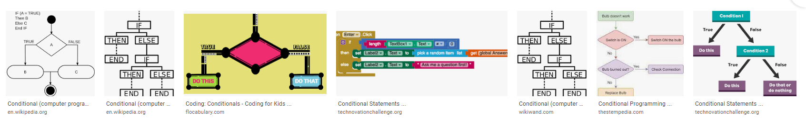
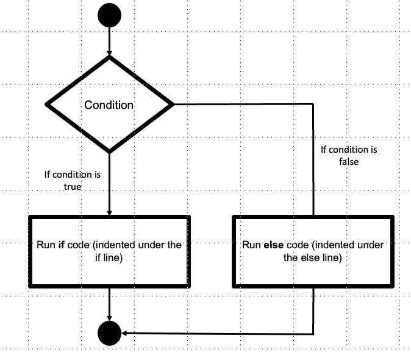
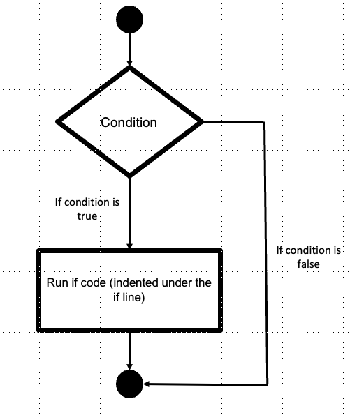
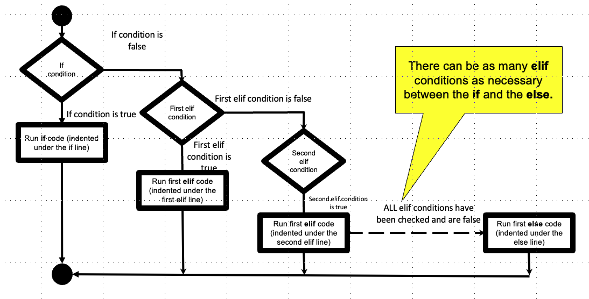
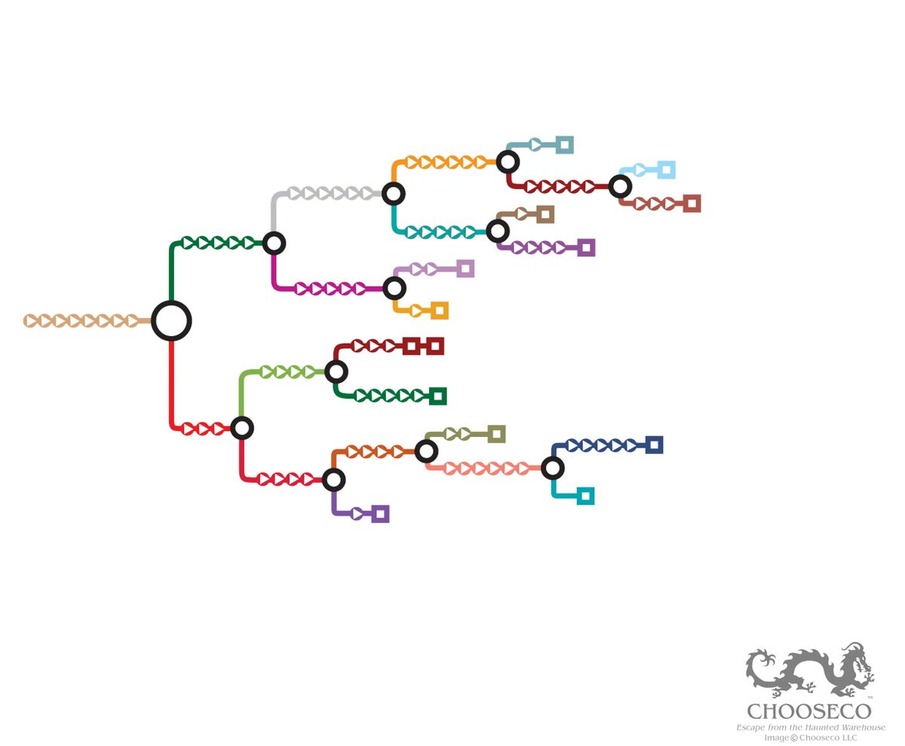

4: Conditionals#
Learning goals:#
Write Boolean expressions based on English requirements
Explain different meta-patterns of conditional blocks (nested, chained, with alternative vs. without)
Construct various types of conditional blocks in Python
What are conditionals and why do we care about them?#
Basic concept: it’s a fork in the road. We use conditional structures to control the flow of our program.
A set of pictures might help to give the intuition:
{kind=link}
Basically anytime you find yourself at a problem step or part of your problem where you say something like “do something based on / depending on / looking at / if some condition”, that is a signal that you need a conditional.
Here are some examples:
decide what to wear: check temperature, check if i’m going to a dress code location
shopping: check how much money i have, check quality level of the thing, what i need; decide what to buy
decide what to eat: spiciness, taste, price
What are some other real-world examples of this sort of situation that you can think of?
Anatomy of a basic conditional block in Python#
Here’s a rough diagram of a basic conditional block in Python:
{kind=link}
And here’s what it looks like in code
# basic conditional block
if BooleanExpression:
# do something
# maybe also something more
else:
# do something else
# and maybe even more something else
The if statement
The if keyword signals that a conditional block is starting.
The Boolean expression determine where to go in the conditional block
True goes to the if branch; False goes to the else branch
The statement needs to end in a colon to signal that the statement has ended. This is the same as with function definitions, and as we will see, with iteration loops also.
The “if” (true) branch code: what should happen in that branch if we go down the path?
Needs to be indented because of scope (same with functions; also will be true of loops)
The else statement
Signals that an else branch will be specified next
Just the else keyword and a colon
The “else” (false) branch code: what should happen in that branch if we go down the other path?
Also needs to be indented
Some examples:
# tell me if a number is even or odd. if it's even, say even, otherwise, say odd.
num = 3
if num % 2 == 0:
print("It's even!")
else:
print("It's odd!")
It's odd!
# Password checker. Say "come in" if the password matches, otherwise say "go away"
userInput = "hello"
password = "bunny"
# if the user input matches the password
if userInput == password:
print("Come in")
else:
print("Go away")
Go away
Waiter checking your age on your ID, and then shows beer/alcohol menu or says “have some water”
age = 23
drinking_age = 21
if age >= drinking_age:
print("Here's the alcohol menu")
else:
print("Have some water")
Here's the alcohol menu
A closer look at Boolean expressions#
All conditional blocks depend on well-crafted Boolean Expressions, which are expressions that evaluate to a Boolean value (i.e., True or False). This is what really determines the logic of the control of flow. So you need to make sure you’re proficient with Booolean expressions.
Boolean Operators#
We use Boolean Operators to compare TWO pieces of data. When evaluated, they yield a Boolean value (True or False).
data1 booleanOperator data2
Here are the main ones:
==equal to / the same as!=not equal to / different from>greater than>=greater than or equal to (at least)<less than<=less than or equal to (at most)
Logical operators#
We use Logical operators to combine basic Boolean expressions into more complex ones, like “is a more than 3 and less than 5”
Here are the main ones:
and(True if all Boolean expressions are True)or(True if any Boolean expression is True)not(True if the Boolean expression is not True)
Full list of comparison and logical operators here
Practice: Construct Boolean expressions#
Let’s practice! Translate these Boolean expressions from English into Python.
Basic Boolean expressions (only Boolean operator)#
# is the driver's speed above the limit?
speed = 75
limit = 45
# boolean expression here
# do i have a passport?
hasPassport = True # assign the value True to the passport variable
# boolean expression here
Compound Boolean expressions (Boolean operators + Logical operators)#
# have i passed all the requirements for graduation?
# which is operationalized as "do i have enough credits, with enough GPA?"
num_credits = 120 # threshold of 120
GPA = 1.5 # threshold of 2.0
# boolean expression here
# did i take the prereq for the class OR get permissionm from the instructor?
took_prereq = False
have_permission = True
# boolean expression here
# is the driver not wearing a seat belt?
seatBelt = False
# boolean expression here
# is the professor in the office and the door open more than a crack (at least 15 degrees) or there is a sign that says come on in or you have an appointment?
prof_in_office = True
door_angle = 5
sign_says = "Come in"
haveAppointment = True
# boolean expression here
Practice: construct basic conditional blocks#
Now let’s practice constructing conditional blocks! Follow along with me to translate these English instructions into conditional blocks. We basically need to 1) decide what the condition is and translate it into a Boolean expression, then 2) decide what actions go in the “true” or “false” branches.
If my speed is above the limit, print stop; otherwise, let me pass.
# if my speed is above the limit, print stop; otherwise, let me pass
speed = 25
limit = 45
# conditional block below here
If i have a passport, print come on in; otherwise, print go away
# if i have a passport, print come on in; otherwise, print go away
# do i have a passport?
hasPassport = False # assign the value True to the passport variable
# conditional block below here
if i have passed all the requirements for graduation, print gradaute! otherwise, print need to do more
# if i have passed all the requirements for graduation, print gradaute! otherwise, print need to do more
# did i accumulate at least 120 credits AND earn at least a 2.0 GPA?
# did i take the prereq for the class OR get permissionm from the instructor?
num_credits = 110 # threshold of 120
GPA = 1.9 # threshold of 2.0
# conditional block below here
Aside: the concept of scope#
Notice the idea of branch code: it’s code that “belongs” to the branch. We only run it if we go into the branch. But also, variables that are defined in the scope of the if statement stay in there.
This is the same thing that happens with functions. Whatever you define in the function is scoped to inside that function.
In Python, we control what belongs to what with indentation. In other languages, you use things like curly braces (e.g., Java, Javascript)
As an example, consider the following example code: how many times do you think we will print the message “hello world”? Why?
# if i have passed all the requirements for graduation, print gradaute! otherwise, print need to do more
# did i accumulate at least 25 credits AND earn at least a 3.0 GPA?
n_credits = 30
gpa = 3.95
hello = "hello world!"
if n_credits >= 25 and gpa >= 3.0:
print("Go ahead")
print(hello)
a_in_f = 5 # this will not be available outside of the scope of hte if statement block
else:
print("Take more classes")
print(hello)
Go ahead
hello world!
The answer: only once! Because both print statements are scoped (indented inside) a conditional branch, it will only execute once: either in the true (if) branch or the false (else) branch.
More complex conditional structures#
The if / else conditional block is the most basic and easy to understand. But often your programs may require something a bit simpler, and sometimes a bit more complex.
Conditional execution#
The else branch is actually optional. Sometimes you just want to do something if it’s true, otherwise you do nothing.
The flow looks like this:
{kind=link}
Some examples:
Only stop someone if they’re above the speed limit
Tell me if someone is coming!
Look through the bag and only pull out the red skittles
Can you think of any others?
# generic
if booleanExpression:
# do something
speed = 25
limit = 30
if speed > limit:
print("Stop!")
Keywords/phrases that signal that this is appropriate?
if only one “choice” (or action) is described, then probably you don’t need an else, since “doing nothing” is a default action
Chained conditionals#
Sometimes you have more than two choices of paths (branches). In that case you need an elif.
The difference from the basic conditional is something like this:
{kind=link}
Some examples:
you have a fever if you’re above 100, hypothermia if you’re under 95; otherwise, you’re all good!
choosing an outfit depending on where you want to go (in the Spring in Maryland!).
choosing a football play depending on what you think the defense is showing.
Any other examples?
The key difference between this type of conditional block and the regular “if/else” blocks is that you need more than one Boolean expression; one for each if or elif statement.
Here’s the generic structure:
if someCondition:
# then something
elif someOtherCondition:
# then something else
else:
# some default (this is technicallly optional
# but if you leave it out, you may have some unexpected edge cases you didnt' account for!
if gpa >= gpa_threshold and required_courses >= req_threshold:
# then something
print("graduate!")
elif gpa >= gpa_threshold and required_courses < req_threshold:
# then something else
print("take more required courses")
elif gpa < gpa_threshold and required_courses >= req_threshold:
print("take an easy course!")
else:
print("talk to an advisor")
---------------------------------------------------------------------------
NameError Traceback (most recent call last)
/var/folders/xz/_hjc5hsx743dclmg8n5678nc0000gn/T/ipykernel_46906/2872807073.py in <module>
----> 1 if gpa >= gpa_threshold and required_courses >= req_threshold:
2 # then something
3 print("graduate!")
4 elif gpa >= gpa_threshold and required_courses < req_threshold:
5 # then something else
NameError: name 'gpa_threshold' is not defined
# example
temp_f = 97
if temp_f >= 100:
print("fever!")
elif temp_f < 70: # need another Boolean expression
print("hypothermia!")
else:
print("all good!")
Keywords/phrases that signal that this is appropriate?
When you see more than two conditions or choices
Practice! Let’s translate these English instructions into Python conditional blocks.
ticket pricing: if you’re under 5 or 65 and up, price is zero; if you’re theater staff, you get half price (7.50); otherwise pay normal price (15)
# ticket pricing:
# if you're under 5 or 65 and up, price is zero;
# if you're theater staff, you get half price (7.50);
# otherwise pay normal price (15)
age = 65
theater_staff = True
# chained conditional block below here
help me write the grader for late assignments: if you submit before target date, you get full credit; if you submit after the target date, but before the last day of the period, you get 85% credit - if you submit on the last day of period, you get 70% credit
# help me write the updated grader for your PCEs:
# if you submit before target date, you get full credit;
# if you submit after the target date, but before or equal 1 week threshold, you get 85% credit
# if you submit after 1` week threshold, but before or equal to 2 week threshold, you get 70% credit
# otherwise, you get no credit
submission_date = 35
target_date = 36
score = 1
# chained conditional block below here
Nested conditionals#
Sometimes it only makes sense to check a condition if earlier conditions are true/false. This is like a garden of forking paths or choose your own adventure. Sometimes this to save time/operations. Other times, it may make your program more readable.
I like to think of it like a choose your own adventure maze:
{kind=link}
Simple example: I want to know if x is the same, less than, or greater than y. We can represent this as a chained conditional with three conditions. But we can also group the less than or greater than conditional block by itself since that only make sense in the situation where x and y are not the same (i.e., x != y).
if x == y:
print("x and y are equal")
else:
if x < y:
print("x is less than y")
else:
print("x is greater than y")
Another simple example: graduation requirements: if you’ve completed the base requirements and you have a 3.0 average, then we check: do you have sufficient electives? if yes, then great! if not, take more electives. if you don’t have the core requirements done, then you need to take care of that first, we’ll worry about electives later.
if n_credits >= credit_threshold and GPA >= 3.0:
if n_electives >= electives_threshold:
print("Ready to graduate!")
else:
print("Get more electives!")
else:
print("Finish core requirements with sufficient GPA!")
Keywords/phrases that signal that this is appropriate? Something about having more than two choices, but some choices only make sense if some earlier condition is met. In other words, we have more of multiple forks, rather than a single fork.
Practice! Let’s translate these English instructions into Python conditional blocks.
Polling booth: if you don’t have an id, go away and register, then come back; if you have an id come on in! then, if you need assistance, go to the assisted booth; otherwise, go to the normal booth.
# polling booth: if your registration doesn't match this location, go away to the right place; if yes, then come on in!
# then, if you need assistance, go to the assisted booth; otherwise, go to the normal booth.
registration_here = True
need_assistance = False
# nested conditional block below here
Some people may say that sometimes this sort of code isn’t great practice, because it can be hard to understand and debug. I’m not sure I completely agree. I think it depends on the structure of your problem. I like to write nested conditionals when the underlying logic is really like a garden of forking paths or choose your own adventure game.
Common errors#
Syntax and indentation errors#
e.g., forgetting the colon, or forgetting to indent
Best recommendation is to use templates for now as you set them up.
Boolean expression errors#
Most commonly, using = (this is assigning!) instead of == (the Boolean operator you actually want)!
Semantic errors#
Not covering all your bases or mapping the wrong conditions to outcomes.
It can be helpful to diagram out or make a truth table to map out the conditions and outcomes to make sure you’re covering all your bases. Example here for Project 1: https://docs.google.com/spreadsheets/d/1-q5XXbMDoji8AMVWxgUf5GW5CUOJfiWQTTV6u0-DwF8/edit?usp=sharing